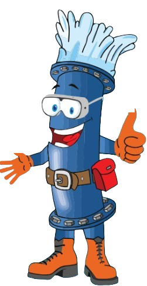
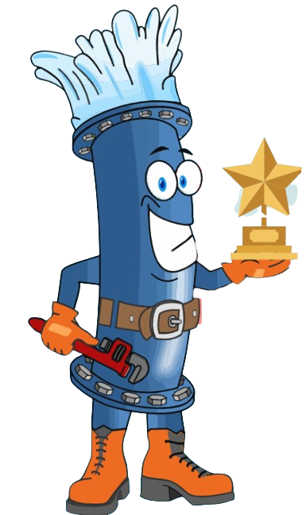
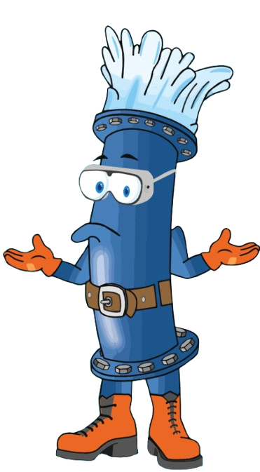

¡Felicitaciones! Has obtenido la calificación perfecta, ya sabes cómo cuidar el agua.
Aciertos:

6001 a 11,630 lts
¡Excelente! Eres campeón del medio ambiente, lo haces perfecto. ¡Felicidades!
Aciertos:

2501 a 6000 lts
¡Vas bien! No eres de lo más ahorrador, pero ya tienes conciencia ambiental. ¡No pares, sigue, sigue!
Aciertos:
0 a 2500 litros
Mmm… alguien no ha hecho su parte. Queda mucho por ahorrar. Sigue aprendiendo y cuida el agua. ¡Tú puedes!
Aciertos:
